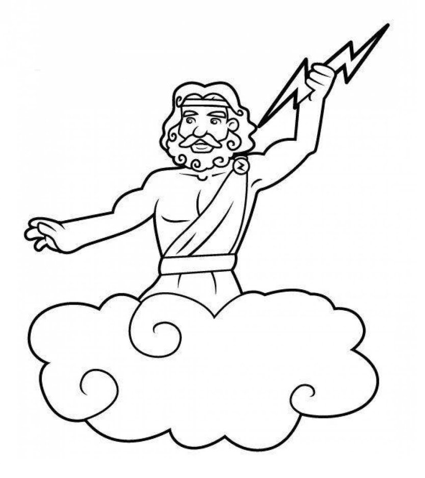

Даний сайт містить інформацію про наступних персонажів давньогрецьких міфів: Зевса, Ареса, Аїда, Медузу Горгону, Прометея та Мінотавра
Давньогрецька міфологія — це система міфів і легенд, яка виникла в давній Греції і мала глибокий вплив на культуру, мистецтво, літературу й філософію як античності, так і пізніших епох.
Ця міфологія відображає уявлення давніх греків про походження світу, природу богів, героїв та людей, а також про надприродні сили, що впливають на життя.
